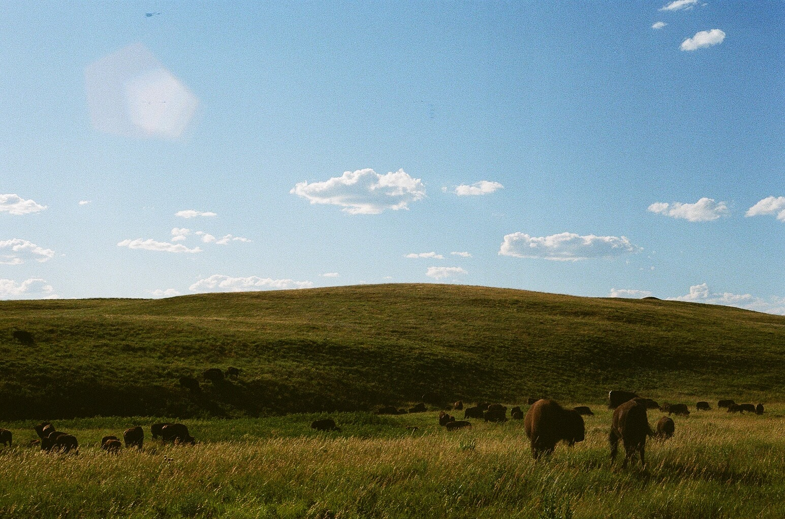
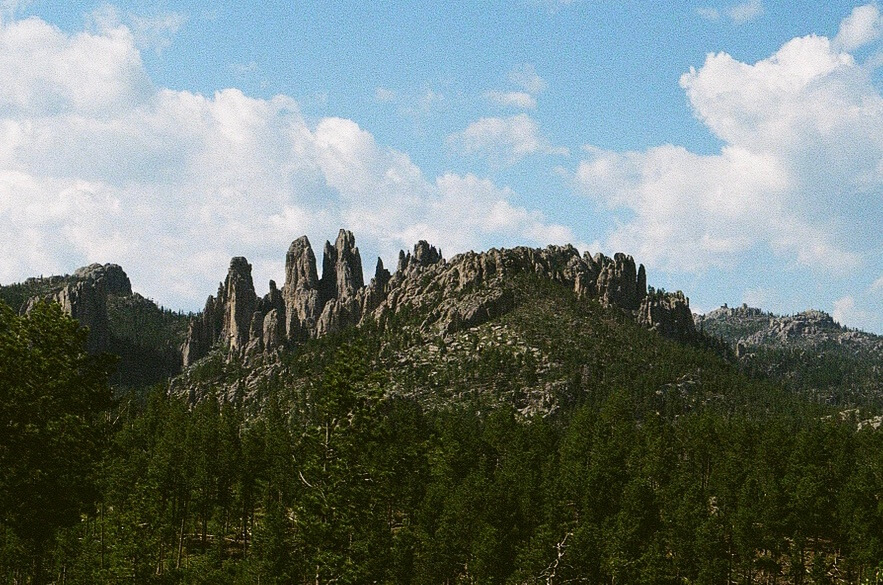
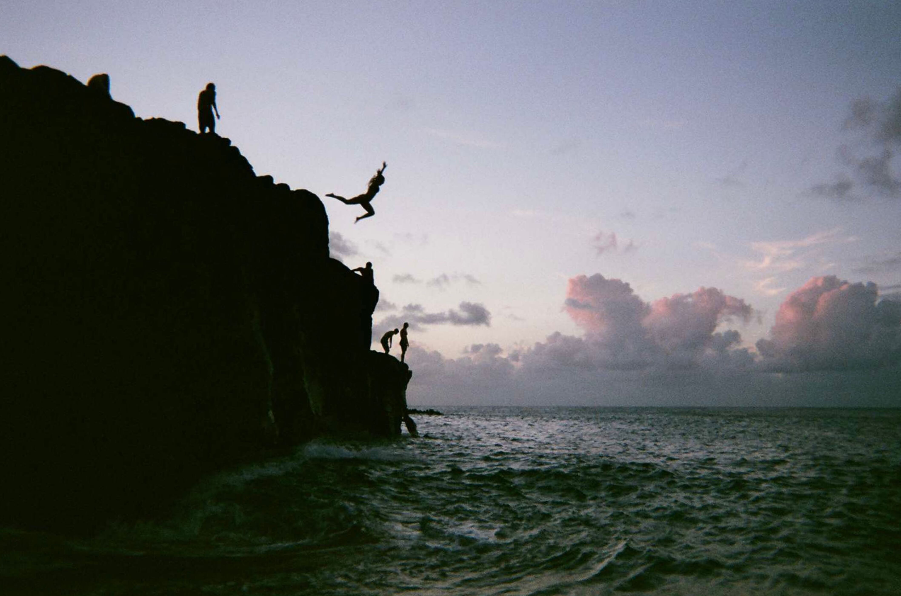
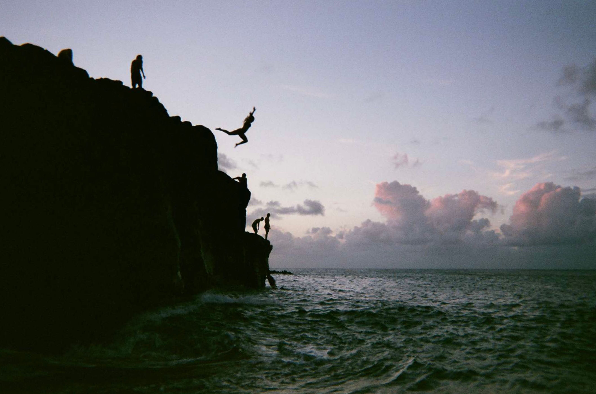
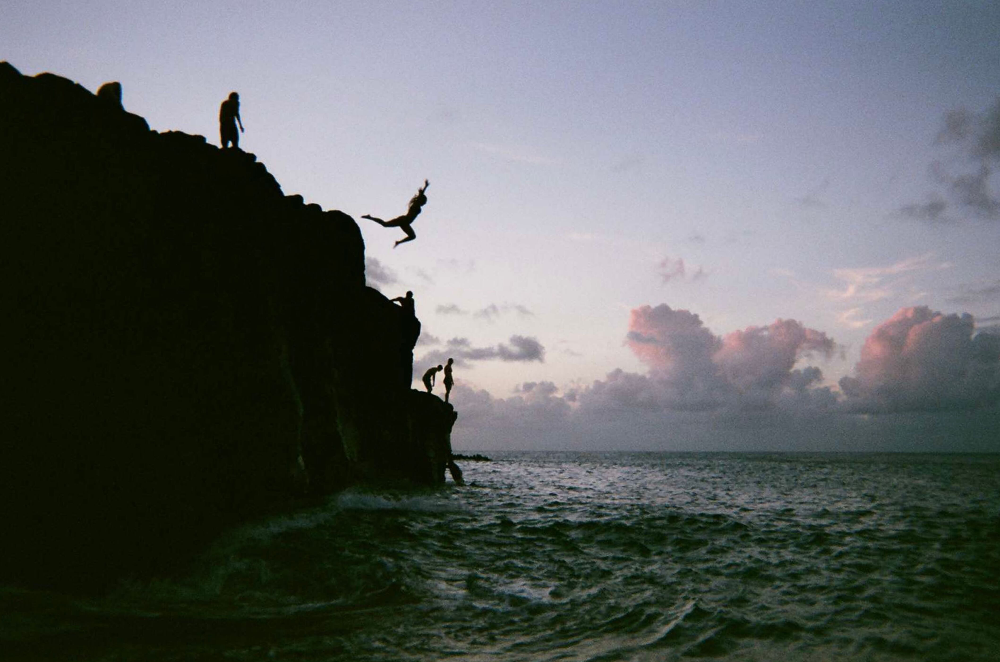

Photo Gallery
I love nature and enjoy traveling to new places around the country. I like to bring a camera with me wherever I go to document my adventures. One day I hope to visit all 50 states! Here are a few pictures from my some of my most recent trips:




 

